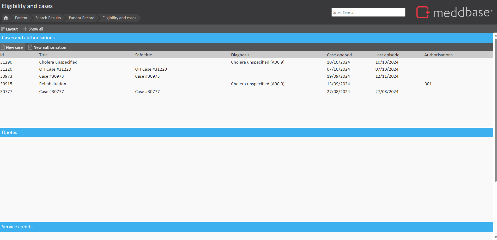
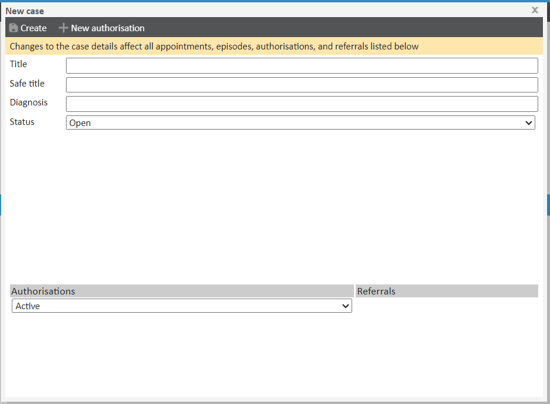
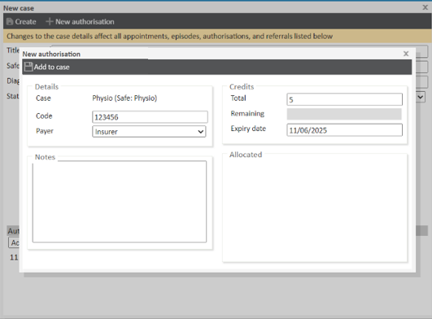
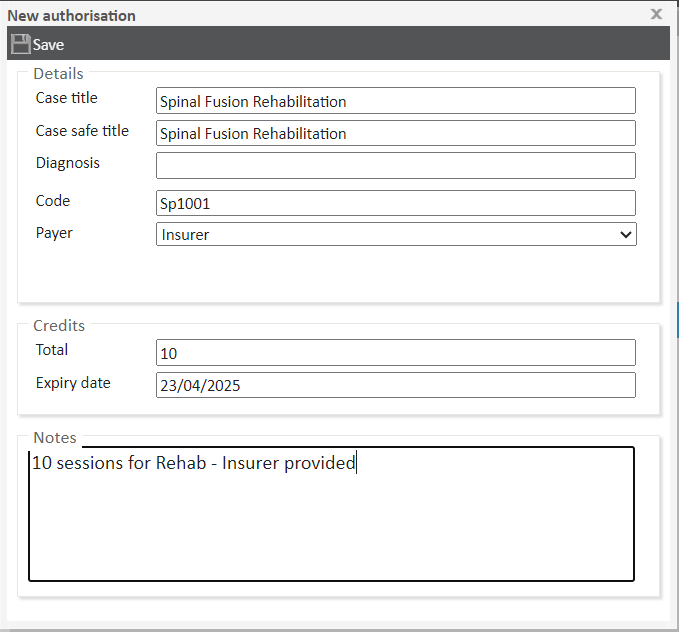
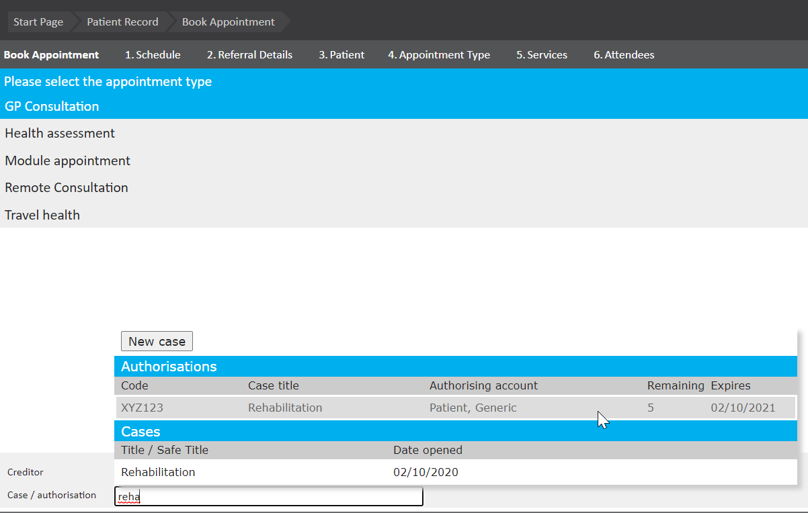
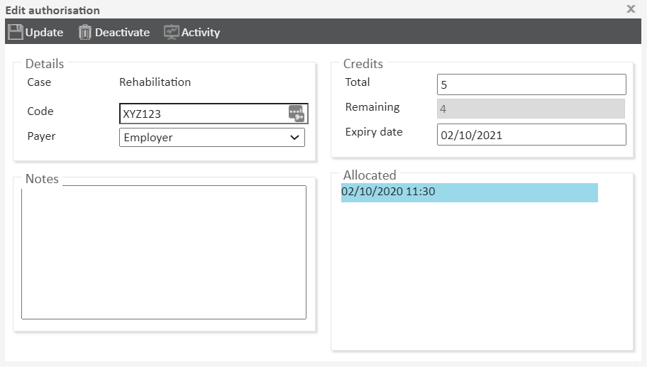

Cases and Authorisation codes allow a series of appointments to be linked under a single treatment plan, regardless of the patient’s default payer. This ensures efficient management of appointment sequences, such as physiotherapy sessions covered by an insurer. Eligibility and Cases can be managed from the Patient Record.
This article provides step-by-step guidance on setting up, using, and managing cases and authorisation codes for patient appointments, including how to allocate credits and track their usage.
Before creating an authorisation code, ensure the patient’s record includes a linked company, such as an insurer or employer, with a charge band correctly assigned in their ‘Personal Details’ page. This is crucial, as the services provided will depend on the company’s charge band. If these details are missing, update them before proceeding. Note that authorisation codes cannot be used for self-paying patients
This process will not work for self-paying patients.
In the Eligibility and Cases page you can:

Cases can be created in many different areas in the at the point of booking an appointment, within a consultation or from the Eligibility and Cases from the Patient Record. Cases can exist to link a series of appointments together.
To create a case in Eligibility and Cases:

Whilst creating a new case, you have the option to also create and apply an authorisation at the same time. Following the above steps of 1-4, click New Authorisation on the top of the window, next to Create. In the New Authorisation window specify:

Authorisations are applied to cases.
To create a new authorisation, click New Authorisation. This will bring up the New Authorisation Window where you can define:

With the case and authorisation now prepared, we can book an appointment (See ‘Appointments’ for more information regarding the booking processes). Upon reaching the service picker page as shown below you will notice the ‘Authorisation Code’ box - clicking here will bring up all the authorisation codes available to this patient.

Selecting the code will change the payer and the charge band allowing the patient to receive the treatment required.
Once a booking has been made and an authorisation code has been used, the consultation will contain a case ‘Rehabilitation’. All appointments made with this authorisation will appear under this case automatically. Return to the patient page and view the authorisation code.

You will find the remaining credits have fallen to 4 and the ‘Allocated’ section now links to the appointment in which this credit was used. Once all authorisations are used they will become hidden from the ‘Eligibility box on the patient home page. To view exhausted authorisation codes click the ‘Show All’ button within this box.